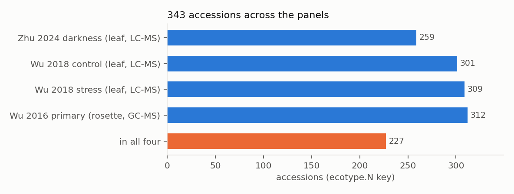
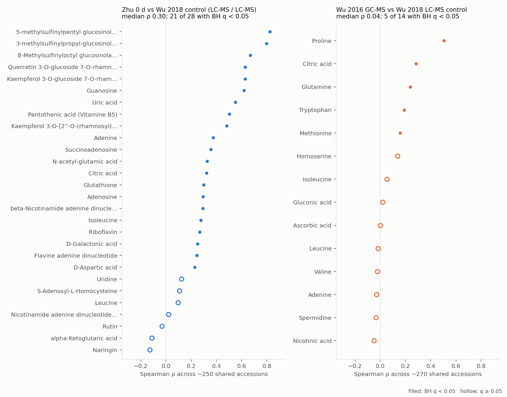
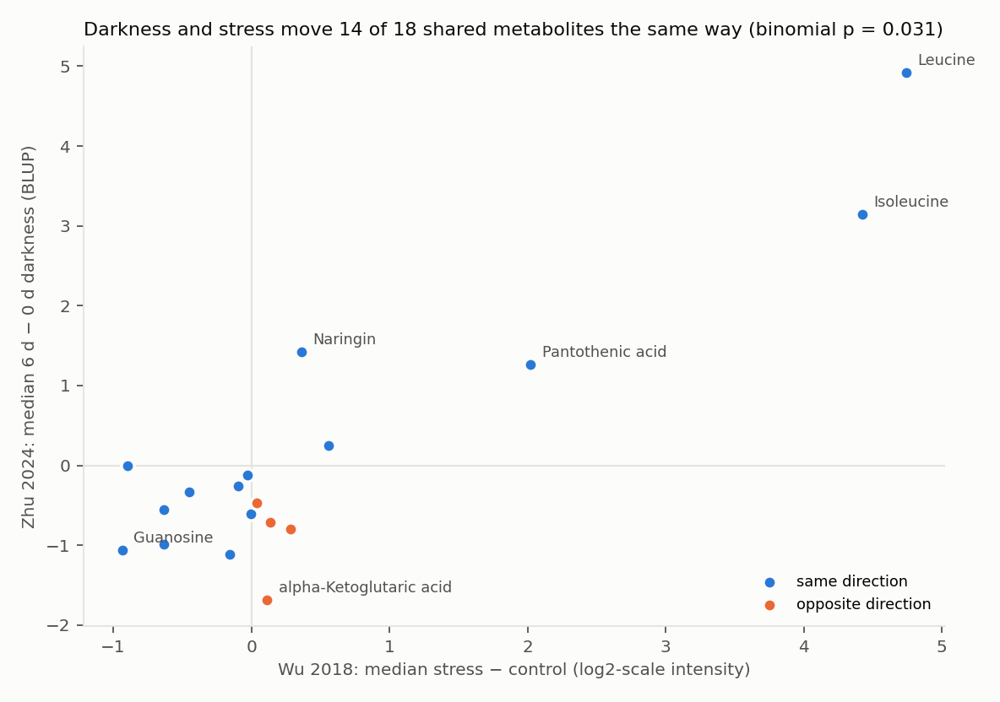
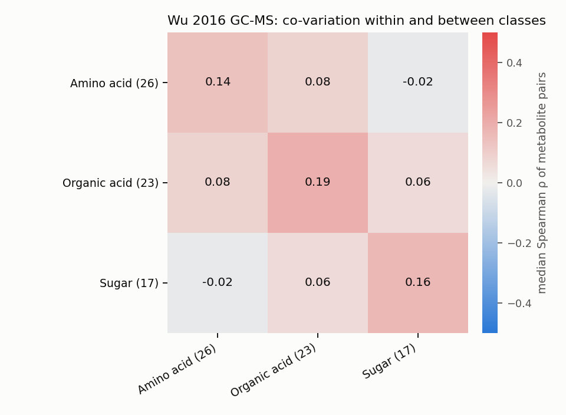
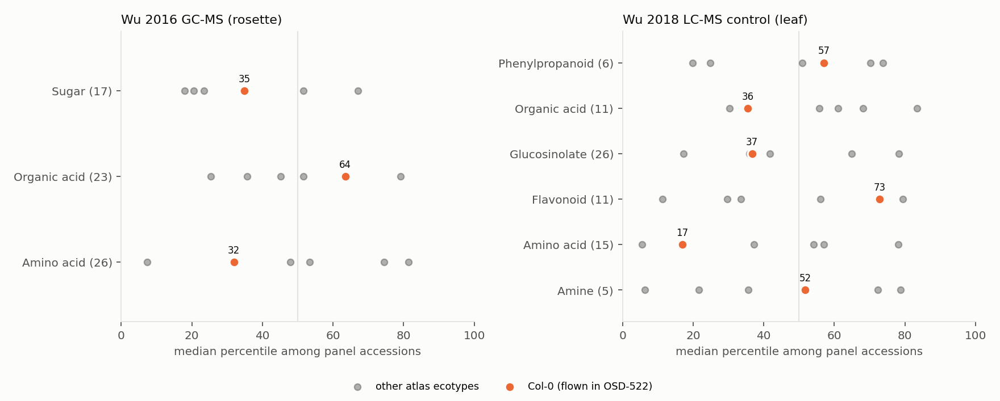
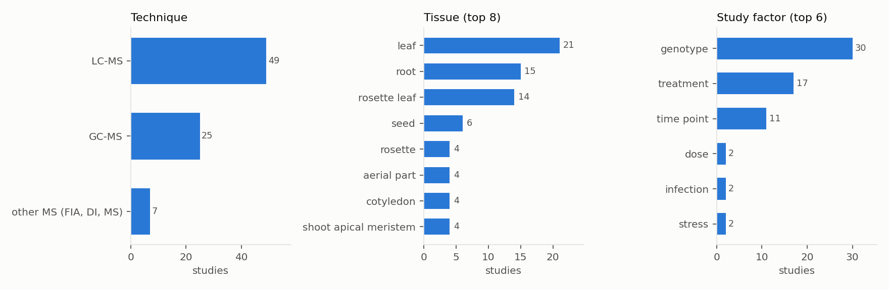

Arabidopsis Atlas · Metabolome story
Three published natural-variation metabolome panels (leaves before and after six days of darkness, leaves under control and stress, and primary metabolism in whole rosettes) share one accession key. Put side by side, they show which differences between accessions repeat from one experiment to the next, how darkness and stress compare, and where the atlas ecotypes sit. The public MetaboLights Arabidopsis studies show what else has been measured.
When two leaf experiments measure the same metabolite, accessions rank alike (median ρ 0.30).
Between the GC-MS rosette panel and the LC-MS leaf panel, only 5 shared compounds agree; proline does best (ρ 0.51).
Six days of darkness and Wu's stress treatment move shared metabolites the same way (p = 0.031).
The same natural population, sampled in different experiments, tissues and conditions.
| Panel | What was measured | Platform | Accessions | Metabolites |
|---|---|---|---|---|
| Zhu et al. 2024, Sci Data | leaves at 0 d and after 6 d of extended darkness | LC-MS | 259 | 95 |
| Wu et al. 2018, Mol Plant | leaves, control and stress (identified metabolites only) | LC-MS | 301 / 309 | 117 |
| Wu et al. 2016, PLoS Genet | whole rosettes, harvested 37 days after germination | GC-MS | 312 | 94 |

results/metabolome_story/panel_overlap.tsv.If an accession is high for a metabolite in one experiment, is it high in another?
Zhu's and Wu's 2018 leaf experiments agree well. Across about 250 shared accessions, 21 of the 28 metabolites matched between them rank accessions alike (BH q < 0.05), with a median Spearman ρ of 0.30. Glucosinolates and flavonols repeat best; the top is 5-methylsulfinylpentyl glucosinolate (ρ 0.82).
The GC-MS and LC-MS panels agree far less. Wu 2016 and Wu 2018 share 14 named compounds across 270 accessions, and their median ρ is 0.04. Only 5 agree significantly, led by proline (ρ 0.51) and citric acid (ρ 0.28). This is not a measure of platform error. The two experiments also differ in what was harvested (whole rosettes vs leaves) and in how plants were grown; Wu 2018's growth stage has not been checked here.

results/metabolome_story/replication.tsv,
results/metabolome_meta_analysis/leaf_accession_replication.tsv.Zhu's six days of darkness against Wu's stress treatment, for the metabolites both measured.
For each metabolite, the median per-accession change under darkness (Zhu, 6 d minus 0 d) is set against the median change under Wu's stress treatment (stress minus control). 14 of the 18 metabolites move in the same direction (two-sided binomial p = 0.031). The branched-chain amino acids leucine and isoleucine rise most in both. Wu's supplement describes its stress as 32 °C darkness; that has not yet been checked against the paper's methods.

results/osd522_metabolome_link/metabolite_flight_bridge.tsv (script 12).Wu 2016's GC-MS panel: 73 named metabolites across 312 accessions.
Across accessions, two amino acids, two organic acids or two sugars correlate slightly more than metabolites from different classes: the median ρ is 0.16 within a class and 0.06 between classes. The strongest pairs are close relatives. Some pairs share a quantification ion (m/z 160 for altrose, glucose and mannose; m/z 158 for leucine and isoleucine), so part of their correlation may be one derivatised signal. Read the pairs as co-variation, not shared regulation.

results/metabolome_story/class_correlation.tsv.| Metabolite | Metabolite | ρ | Quantification ions (m/z) |
|---|---|---|---|
| Altrose | Glucose | 0.97 | 160 / 160 |
| Octadecanoic acid | Palmitic acid | 0.84 | 117 / 313 |
| Isoleucine | Leucine | 0.84 | 158 / 158 |
| Glutamine [-H2O] | Octacosanoic acid | 0.84 | 154 / 117 |
| Glutamine [-H2O] | 4-hydroxy-benzoic acid | 0.82 | 154 / 223 |
| Glucose | Mannose | 0.81 | 160 / 160 |
| Palmitic acid | Eicosanoic acid methyl ester | 0.81 | 313 / 326 |
| Proline | Hydroxyproline | 0.80 | 142 / 230 |
| Maleic acid | Fumaric acid | 0.80 | 147 / 245 |
| 4-hydroxy-benzoic acid | Octacosanoic acid | 0.80 | 223 / 117 |
The six ecotypes shaped in the 3D atlas, placed within each panel's range of accessions.
Col-0 (the ecotype flown in NASA's OSD-522 experiment) sits between the 17th and 73th percentile in every class shown. It is lowest for amino acids in Wu 2018's control leaves (percentile 17) and also below the middle for amino acids in the GC-MS rosettes (32). It is highest for flavonoids (73). The other five atlas ecotypes spread much more widely, from percentile 6 to 83.

results/metabolome_story/atlas_ecotype_percentiles.tsv.Public Arabidopsis thaliana studies in the EMBL-EBI MetaboLights repository.
73 of the 88 MetaboLights search results for "arabidopsis thaliana" list it as a study organism (catalogue fetched 2026-10-22). 70 of them have a metabolite result table, covering 8,417 samples. Genotype (30 studies) and treatment (17) are the commonest study factors, and leaves and roots the commonest tissues. 171 of the explorer's 244 compounds are named in at least one study, so most panel metabolites can be followed into independent experiments.

app/public/explorer/metabolights_catalogue.json (script 18),
results/metabolome_story/metabolights_summary.tsv.| Compound | MetaboLights studies naming it | In panels |
|---|---|---|
| Phenylalanine | 35 | wu2016 |
| Threonine | 34 | wu2016 |
| Proline | 33 | wu2016, wu2018 |
| Malic acid | 32 | wu2016, zhu |
| Valine | 32 | wu2016, wu2018 |
| Serine | 31 | wu2016, zhu |
| Sucrose | 30 | wu2016 |
| Citric acid | 29 | wu2016, wu2018, zhu |
Distributions, the GC-MS vs LC-MS scatter and the atlas ecotypes for one metabolite.
The largest rises and falls, filtered by class, platform or accession.
Open any of the 25 GC-MS studies and plot a metabolite by its factors, loaded live from EMBL-EBI.
How the same metabolite pathways behave in the OSD-522 spaceflight transcriptome and proteome.
To download a selection, use Export CSV in the explorer. Processed tables are in
data/processed/metabolome/
and this page's results in
results/metabolome_story/.
scripts/wu_modes.py). Metabolites are matched across
panels only by Zhu–Wu formula and retention-time pairs or by identical names; synonyms such as malate and
malic acid stay apart, so some real matches are missed. Wu et al. 2018 is not open access; its per-accession
values are shown with citation for research use.
Every number on this page is filled in by a script from files in the repository.
| Step | Script | Outputs |
|---|---|---|
| Wu 2016 GC-MS panel | 16 | data/processed/metabolome/wu2016_* |
| One accession table | 17 | data/processed/metabolome/accessions_unified.csv |
| MetaboLights catalogue | 18 | app/public/explorer/metabolights_catalogue.json |
| Explorer data | 19 | app/public/explorer/ |
| Results on this page | 20 | results/metabolome_story/ |
| This page | 21 | app/public/metabolome-story.html |